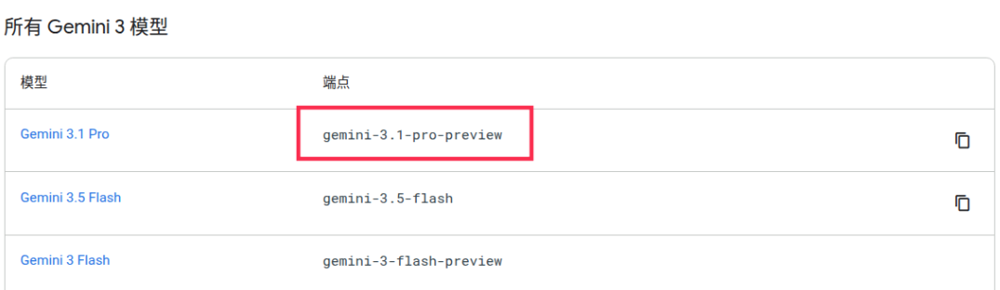
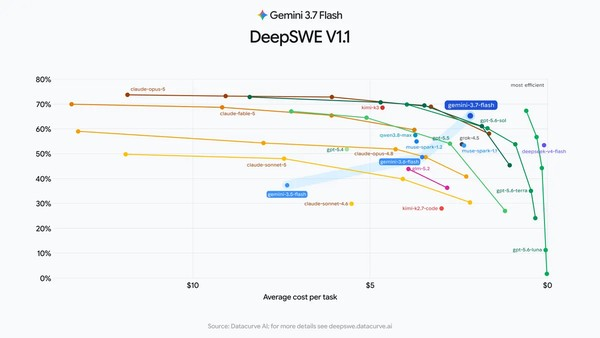
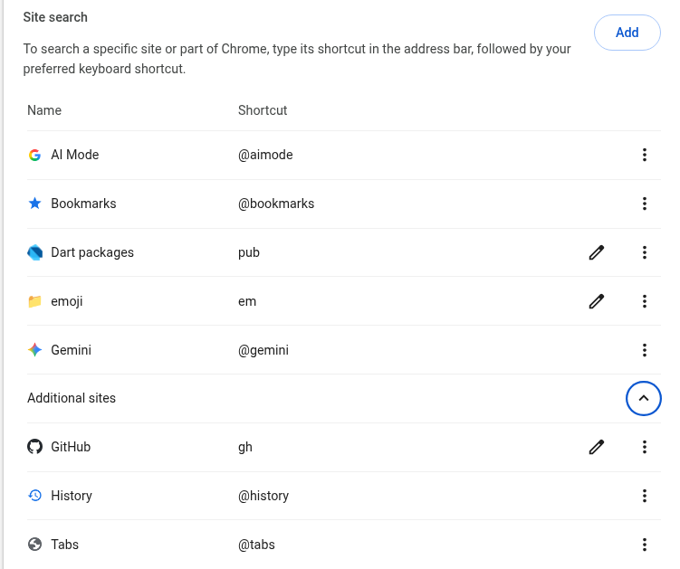
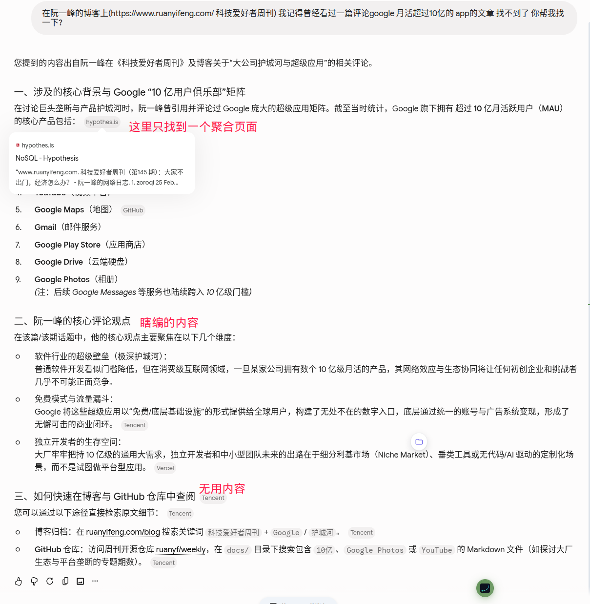
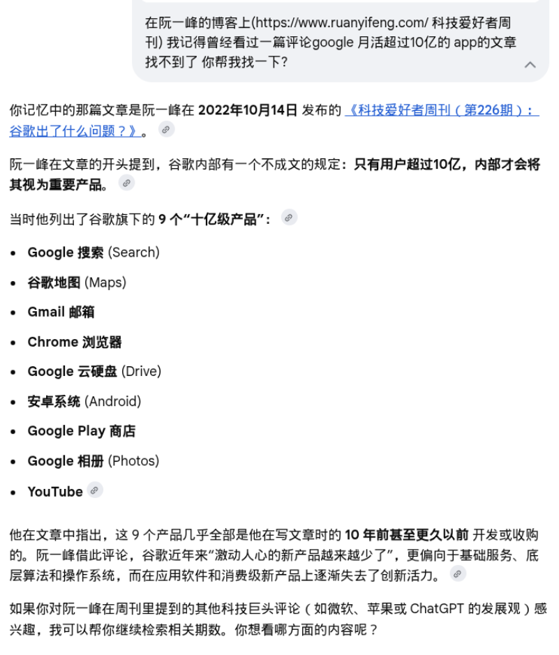

news / 新闻
AI 新闻
新模型像放鞭炮一样发布: - DeepseekV4Pro发布 - 好像一手测评显示效果一般? 仅仅比V4flash强点有限? - 同时api涨价好几倍, 梁圣评级下调至梁子 - 但至少DS说到做到 flash发布两周后就发布了pro -- 反观🐶家, 现在pro版本的官方endpoint依旧是"gemini-3.1-pro-preview" 让人如何绷得住啊😹

- Deepseek Harness 发布
- 不知道对比pi和opencode到底怎么样
- 目前来看可定制化能力非常非常强 还可以可视化debug agent的执行思考过程
- 但暂时观望 不去尝试了 感觉如果开始尝试会是一个时间黑洞...
- 确实 harness对实际任务的表现情况影响很大, deepseek开始发力了是好事
- Grok4.6发布
- Fable5的新廉价平替? 看来整合了cursor的海量数据确实有效果, 再加上推特上的实时消息, 感觉grok变得非常有吸引力了...
- Gemini Pro再不发出来, 以后御三家OAG里的G就要变Grok了
- GLM5.3发布
- Fable5的开源平替? 开源SOTA?
- 完全基于GLM5.2后训练而来, 提升巨大 -- 国内好多后训练仙人!
- Qwen3.8-27b发布
- 原生支持多模态, 1M上下文, (据说)大约是opus4.6水平...
- 太疯狂了, 本地消费级显卡能跑起来的模型能力能达到这个水平
- 应该还会出一个moe版本的 速度更快 qwen现在在小模型领域真是领先
- 而在无人在意的角落👉...
- Gemini 3.7-flash发布
- 看官方的"trust-me-bro benchmark"分数 效果还不错 -- 超过了opus4.8和sonnet5 ?
- 工作中也用了一段时间3.7了 说实话体感没有太大变化...

AI for math
- Claude在黎曼猜想上取得进展
-
Anthropic 披露，这个尚未发布的 Claude 研究版本，将黎曼 ζ 函数中已知至少位于临界线上的零点比例下界，由 41.6% 提高到了 67.2%。
-
而在此前 37 年里，数学家们总共只把这个数字提高了 0.8 个百分点。
- 似乎这作者还是之前备受争议的协和4+4培养出来的医生 业余数学爱好者
-
更令人钦佩的是，金医生将这一过程完全开源。他的GitHub仓库里不仅有最终论文，还有那段神级提示词、历次迭代的手稿、Lean 4形式化证明代码以及公理审计报告。一切都在阳光下，接受全人类的检验。
- B站看到一条评论:
-
所以现在的现实问题是。大家赶紧找问题让ai试。在旧的数学评价体系崩溃的前夜赶上最后一顿晚餐。能捞一笔算一笔，先留个名字
其他新闻
- 朱镕基总理去世🕯️
- 欧洲日食
- 还很兴奋的跑到天台上去看 结果在日食的时候太阳已经被西边的山挡住了...
gems / 分享
- Excited! 12集文献纪录片《江泽民》在央视播出
-
吃饭的时候看 目前看了两集 很棒的纪录片
-
UP主分享: (B站) 神烦老狗
- 一个不太正经的AI测评博主 适合下饭看
-
为啥推荐他呢, 原因有二:
-
chrome tip: 自定义搜索 实现快搜emoji
- 效果就是在chrome搜索栏输入
em foobar的时候, 直接打开emojidb.org 搜索"foobar" - 实现这个效果很简单:
- 打开
chrome://settings/searchEngines - 在"Site search"下点击"Add"
shortcut=em/URL=https://emojidb.org/%s-emojis
- 打开
- 用这个方式可以随意增加自定义的搜索, 比如我就添加了
pub和gh的搜索快捷方式- 另外chrome还自带了
@gemini/@aimode用来快速提问
- 另外chrome还自带了

misc / 杂记
运动 - 五个工作日都有运动: 两次瑜伽, 一次力量, 剩下两天算比较摸鱼 - 上周忘记写了 也是五次运动 强度比这周大 - 臀推100kg (6次x3组, 感觉还有余力) -- 第一个重量超过体重的项目 - 这周测试不借力的引体向上 现在满状态下可以勉强做到6个了 - 上周测试了一下借力引体(连蹬带踹那种) 可以做到9个 -- 时至今日我仍未达到中考体测满分标准🥬
GeminiApp月活超过10亿 - 这是Google旗下第14款月活超过10亿的产品 - 这让我想起了一篇旧文: "科技爱好者周刊（第 226 期）：谷歌出了什么问题？" -- 那是2022年, 当时Google月活10亿的app只有9个 - 我用AImode查了一下, 这几年多出来的五个产品分别是: calendar(日历), discover(信息流), lens(谷歌镜头), messages(谷歌信息) 和Gemini - 说实话discover和messages只能说是借了GoogleApp和安卓的东风而已吧? 实际体验很一般
AImode vs Gemini - 写作上面这一段时, 为了找上面那个旧文 GeminiApp给了一个非常糟糕的答案(基本就是瞎编), 反而AImode可以准确的找到那篇文章的原文 - 感觉有点无语, 也就是说, search虽然有非常好的网络数据和RAG能力, 但是由于组织架构的问题, Gemini非要自己造一套轮子, 而且(在我这个usecase上)效果非常拉垮


Disqus 留言